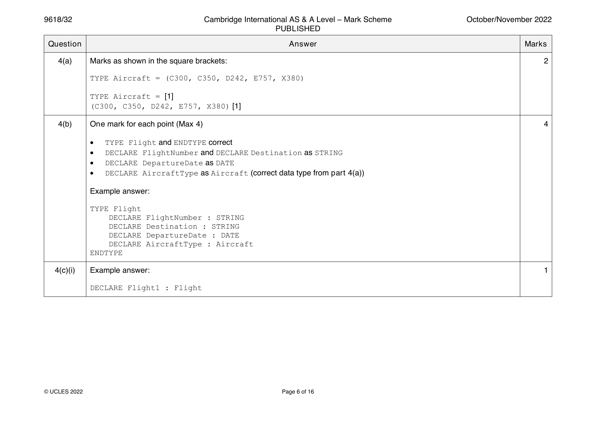
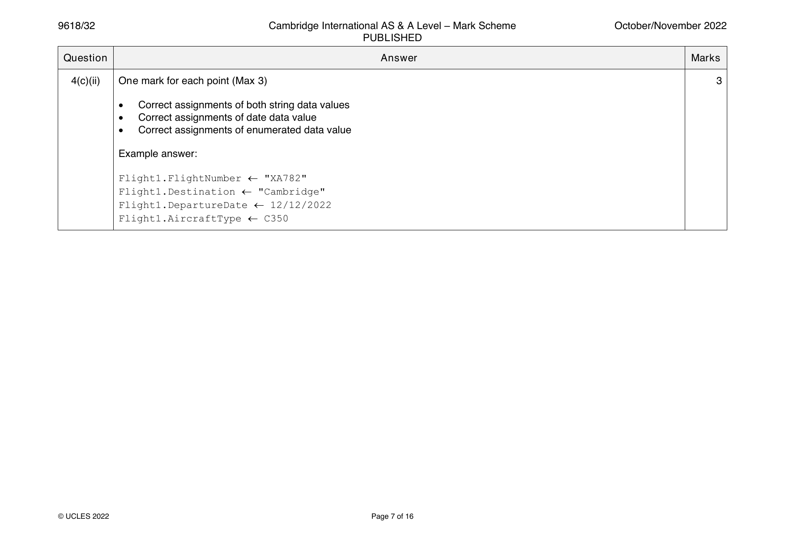
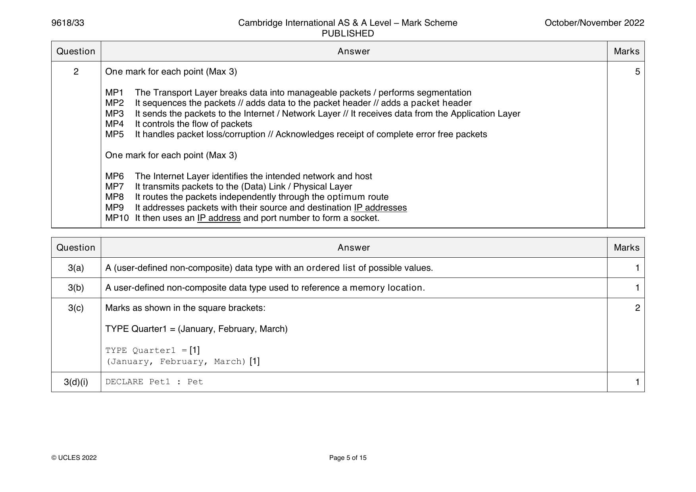
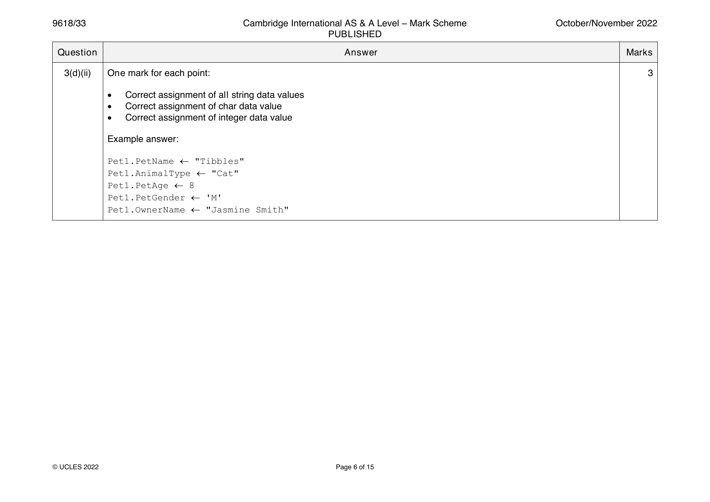
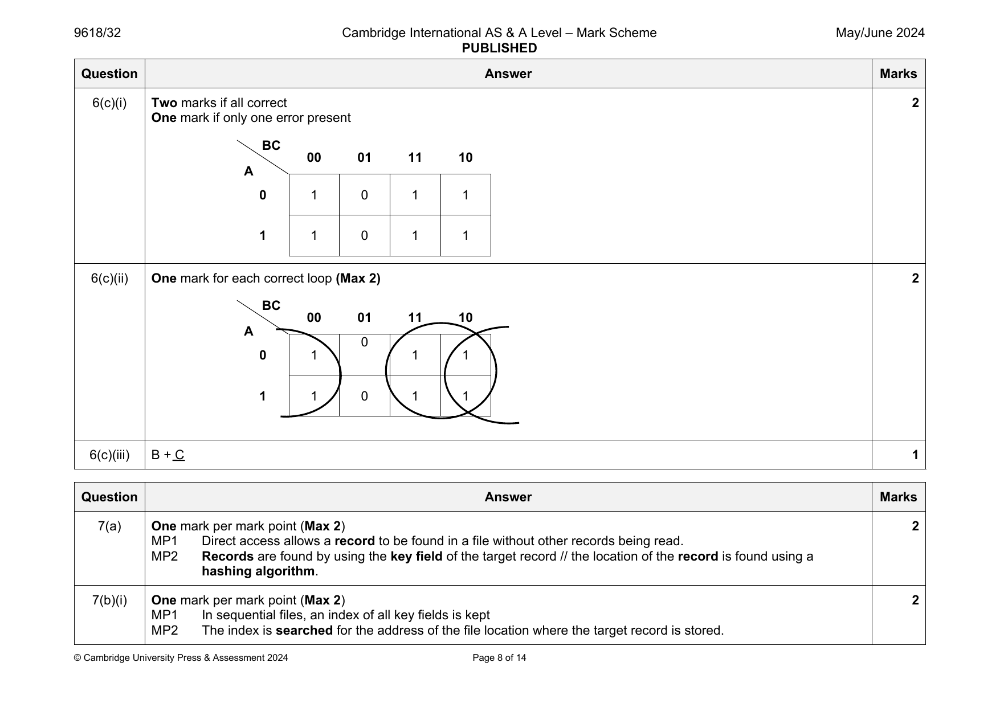
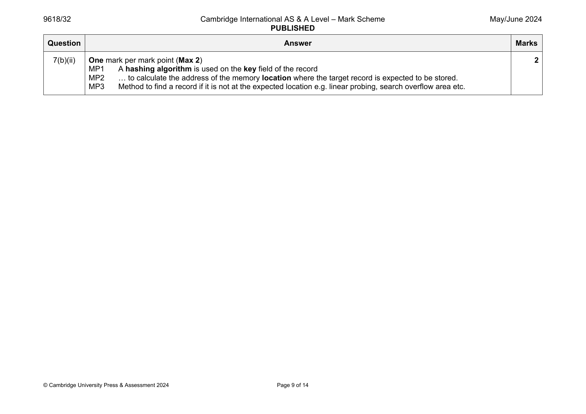

9618-2021-mj-31-q01
May/June 2021 · Paper 31 · Question 1 · 14 marks
1(a) Working: one mark for calculation of the mantissa and one mark for 3
calculation or use of the exponent
Exponent: one from:
= 0.11101 × 23 // 0.11101 × 211 // 0.11101 × 103 // 0.11101 × 1011
= 1.00011 × 23 // 1.00011 × 211 // 1.00011 × 103 // 1.00011 × 1011
= appropriate shifting of binary point for +7.25
Mantissa: one from:
= 111.01 (conversion to binary +7.25 – 10 bits)
= 0111010000 (mantissa 10 bits for +7.25
= 1000101111(one’s complement mantissa for –7.25)
= 1000110000 (two’s complement mantissa for –7.25)
Correct Answer (Max 1)
Mantissa Exponent
1 0 0 0 1 1 0 0 0 0 0 0 0 0 1 1
1(b) One mark for working out the exponent 3
One mark for working out the mantissa
One mark for the correct answer
Example answers
• =1.011000111 × 27 (exponent is 7)
• =10110001.11 // –128 + 32 + 16 + 1 + 0.5 + 0.25 // convert to positive
01001110.01 (and add a minus sign to the answer)
• –78.25
1(c) One mark for working 3
One mark for correct mantissa
One mark for correct exponent
Example answers
Number of places added to exponent for normalisation −6 for number to
retain its value // mantissa moved 6 places left
Mantissa
0 1 1 1 0 0 0 0 0 0
Exponent
1 0 0 0 0 1
1(d)(i) One mark for each correct marking point (Max 3) 3
• Requires 11 bits / more than 10 bits to store (accurately) / reference to
maximum (positive) number that can be stored = 511
• Denary 513 in binary is 1000000001 // Normalised: 0.1000000001
• Results in overflow
© UCLES 2021 Page 3 of 10
1(d)(ii) One mark for each correct marking point (Max 2) 2
• The number of bits for the mantissa must be increased
• 11/12 bits mantissa and 5/4 bits exponent
Question Answer Marks
Official mark scheme pages: 3, 4 · source PDF URL
9618-2021-mj-31-q02
May/June 2021 · Paper 31 · Question 2 · 8 marks
2(a) One mark for each correct marking point (Max 2) 2
• To create a new data type (from existing data types)
• To allow data types not available in a programming language to be
constructed // To extend the flexibility of the programming language
2(b)(i) TYPE SchoolDay = (Monday, Tuesday, Wednesday, Thursday, 1
Friday)
2(b)(ii) TYPE WeekEnd = (Saturday, Sunday) 1
2(c) One mark for each marking point (Max 4) 4
• TYPE ClubMeet and ENDTYPE correct
• DECLARE FirstName and DECLARE LastName included with correct
data types
• DECLARE Schoolday included with correct data types from part 2(b)(i)
• DECLARE Weekend included with correct data types from part 2(b)(ii)
Example answer
TYPE ClubMeet
DECLARE FirstName : STRING
DECLARE LastName : STRING
DECLARE Schoolday : SchoolDay
DECLARE Weekend : WeekEnd
ENDTYPE
© UCLES 2021 Page 4 of 10
Official mark scheme pages: 4 · source PDF URL
9618-2021-mj-32-q01
May/June 2021 · Paper 32 · Question 1 · 14 marks
1(a) Working: one mark for calculation of the mantissa and one mark for 3
calculation or use of the exponent
Exponent: one from:
= 0.11101 × 23 // 0.11101 × 211 // 0.11101 × 103 // 0.11101 × 1011
= 1.00011 × 23 // 1.00011 × 211 // 1.00011 × 103 // 1.00011 × 1011
= appropriate shifting of binary point for +7.25
Mantissa: one from:
= 111.01 (conversion to binary +7.25 – 10 bits)
= 0111010000 (mantissa 10 bits for +7.25
= 1000101111(one’s complement mantissa for –7.25)
= 1000110000 (two’s complement mantissa for –7.25)
Correct Answer (Max 1)
Mantissa Exponent
1 0 0 0 1 1 0 0 0 0 0 0 0 0 1 1
1(b) One mark for working out the exponent 3
One mark for working out the mantissa
One mark for the correct answer
Example answers
• =1.011000111 × 27 (exponent is 7)
• =10110001.11 // –128 + 32 + 16 + 1 + 0.5 + 0.25 // convert to positive
01001110.01 (and add a minus sign to the answer)
• –78.25
1(c) One mark for working 3
One mark for correct mantissa
One mark for correct exponent
Example answers
Number of places added to exponent for normalisation −6 for number to
retain its value // mantissa moved 6 places left
Mantissa
0 1 1 1 0 0 0 0 0 0
Exponent
1 0 0 0 0 1
1(d)(i) One mark for each correct marking point (Max 3) 3
• Requires 11 bits / more than 10 bits to store (accurately) / reference to
maximum (positive) number that can be stored = 511
• Denary 513 in binary is 1000000001 // Normalised: 0.1000000001
• Results in overflow
© UCLES 2021 Page 3 of 10
1(d)(ii) One mark for each correct marking point (Max 2) 2
• The number of bits for the mantissa must be increased
• 11/12 bits mantissa and 5/4 bits exponent
Question Answer Marks
Official mark scheme pages: 3, 4 · source PDF URL
9618-2021-mj-32-q02
May/June 2021 · Paper 32 · Question 2 · 8 marks
2(a) One mark for each correct marking point (Max 2) 2
• To create a new data type (from existing data types)
• To allow data types not available in a programming language to be
constructed // To extend the flexibility of the programming language
2(b)(i) TYPE SchoolDay = (Monday, Tuesday, Wednesday, Thursday, 1
Friday)
2(b)(ii) TYPE WeekEnd = (Saturday, Sunday) 1
2(c) One mark for each marking point (Max 4) 4
• TYPE ClubMeet and ENDTYPE correct
• DECLARE FirstName and DECLARE LastName included with correct
data types
• DECLARE Schoolday included with correct data types from part 2(b)(i)
• DECLARE Weekend included with correct data types from part 2(b)(ii)
Example answer
TYPE ClubMeet
DECLARE FirstName : STRING
DECLARE LastName : STRING
DECLARE Schoolday : SchoolDay
DECLARE Weekend : WeekEnd
ENDTYPE
© UCLES 2021 Page 4 of 10
Official mark scheme pages: 4 · source PDF URL
9618-2021-mj-33-q01
May/June 2021 · Paper 33 · Question 1 · 14 marks
1(a) Working: one mark for calculation of the mantissa and one mark for 3
calculation or use of the exponent
Exponent: one from:
= 0.11101 × 23 // 0.11101 × 211 // 0.11101 × 103 // 0.11101 × 1011
= 1.00011 × 23 // 1.00011 × 211 // 1.00011 × 103 // 1.00011 × 1011
= appropriate shifting of binary point for +7.25
Mantissa: one from:
= 111.01 (conversion to binary +7.25 – 10 bits)
= 0111010000 (mantissa 10 bits for +7.25
= 1000101111(one’s complement mantissa for –7.25)
= 1000110000 (two’s complement mantissa for –7.25)
Correct Answer (Max 1)
Mantissa Exponent
1 0 0 0 1 1 0 0 0 0 0 0 0 0 1 1
1(b) One mark for working out the exponent 3
One mark for working out the mantissa
One mark for the correct answer
Example answers
• =1.011000111 × 27 (exponent is 7)
• =10110001.11 // –128 + 32 + 16 + 1 + 0.5 + 0.25 // convert to positive
01001110.01 (and add a minus sign to the answer)
• –78.25
1(c) One mark for working 3
One mark for correct mantissa
One mark for correct exponent
Example answers
Number of places added to exponent for normalisation −6 for number to
retain its value // mantissa moved 6 places left
Mantissa
0 1 1 1 0 0 0 0 0 0
Exponent
1 0 0 0 0 1
1(d)(i) One mark for each correct marking point (Max 3) 3
• Requires 11 bits / more than 10 bits to store (accurately) / reference to
maximum (positive) number that can be stored = 511
• Denary 513 in binary is 1000000001 // Normalised: 0.1000000001
• Results in overflow
© UCLES 2021 Page 3 of 10
1(d)(ii) One mark for each correct marking point (Max 2) 2
• The number of bits for the mantissa must be increased
• 11/12 bits mantissa and 5/4 bits exponent
Question Answer Marks
Official mark scheme pages: 3, 4 · source PDF URL
9618-2021-mj-33-q02
May/June 2021 · Paper 33 · Question 2 · 8 marks
2(a) One mark for each correct marking point (Max 2) 2
• To create a new data type (from existing data types)
• To allow data types not available in a programming language to be
constructed // To extend the flexibility of the programming language
2(b)(i) TYPE SchoolDay = (Monday, Tuesday, Wednesday, Thursday, 1
Friday)
2(b)(ii) TYPE WeekEnd = (Saturday, Sunday) 1
2(c) One mark for each marking point (Max 4) 4
• TYPE ClubMeet and ENDTYPE correct
• DECLARE FirstName and DECLARE LastName included with correct
data types
• DECLARE Schoolday included with correct data types from part 2(b)(i)
• DECLARE Weekend included with correct data types from part 2(b)(ii)
Example answer
TYPE ClubMeet
DECLARE FirstName : STRING
DECLARE LastName : STRING
DECLARE Schoolday : SchoolDay
DECLARE Weekend : WeekEnd
ENDTYPE
© UCLES 2021 Page 4 of 10
Official mark scheme pages: 4 · source PDF URL
9618-2021-on-31-q01
Oct/Nov 2021 · Paper 31 · Question 1 · 7 marks
1(a)(i) One mark for each correct marking point (Max 2) 2
• 010111000110 (correct mantissa)
• 0111 (correct exponent)
1(a)(ii) One mark for each correct consequence 2
One mark for each correct justification
Consequence
• The precision/accuracy of the number would be reduced
Justification
• … because the least significant bits of the original number have been
truncated/lost // the original number had 13 bits / 14 bits with sign but the
mantissa can only store 12 bits
1(b) One mark for each correct marking point (Max 3) 3
• To store the maximum range of numbers in the minimum number of bytes
/ bits
• Normalisation minimises the number of leading zeros/ones represented
• Maximising the number of significant bits // maximising the (potential)
precision / accuracy of the number for the given number of bits
• … enables very large / small numbers to be stored with accuracy.
• Avoids the possibility of many numbers having multiple representations.
© UCLES 2021 Page 3 of 10
Official mark scheme pages: 3 · source PDF URL
9618-2021-on-31-q03
Oct/Nov 2021 · Paper 31 · Question 3 · 4 marks
3(a) One mark for each marking point (Max 2) 2
• TYPE Parts =
• (Monitor, CPU, SSD, HDD, LaserPrinter, Keyboard,
Mouse)
Complete answer
TYPE Parts = (Monitor, CPU, SSD, HDD, LaserPrinter,
Keyboard, Mouse)
3(b) One mark for each marking point (Max 2) 2
• TYPE SelectParts = ^
• correct data type chosen Parts
Complete answer
TYPE SelectParts = ^Parts
© UCLES 2021 Page 4 of 10
Official mark scheme pages: 4 · source PDF URL
9618-2021-on-31-q05
Oct/Nov 2021 · Paper 31 · Question 5 · 6 marks
5(a) One mark for each correct marking point (Max 4) 4
• In both serial and sequential files records are stored one after the other …
• … and need to be accessed one after the other
• Serial files are stored in chronological order
• Sequential files are stored with ordered records
• … and stored in the order of the key field
• In serial files, new records are added in the next available space / records
are appended to the file
• In sequential files, new records are inserted in the correct position.
5(b) Direct (access) 1
5(c) Sequential (access) 1
© UCLES 2021 Page 5 of 10
Official mark scheme pages: 5 · source PDF URL
9618-2021-on-32-q01
Oct/Nov 2021 · Paper 32 · Question 1 · 7 marks
1(a)(i) One mark for each correct marking point (Max 2) 2
• 010111000110 (correct mantissa)
• 0111 (correct exponent)
1(a)(ii) One mark for each correct consequence 2
One mark for each correct justification
Consequence
• The precision/accuracy of the number would be reduced
Justification
• … because the least significant bits of the original number have been
truncated/lost // the original number had 13 bits / 14 bits with sign but the
mantissa can only store 12 bits
1(b) One mark for each correct marking point (Max 3) 3
• To store the maximum range of numbers in the minimum number of bytes
/ bits
• Normalisation minimises the number of leading zeros/ones represented
• Maximising the number of significant bits // maximising the (potential)
precision / accuracy of the number for the given number of bits
• … enables very large / small numbers to be stored with accuracy.
• Avoids the possibility of many numbers having multiple representations.
© UCLES 2021 Page 3 of 10
Official mark scheme pages: 3 · source PDF URL
9618-2021-on-32-q03
Oct/Nov 2021 · Paper 32 · Question 3 · 4 marks
3(a) One mark for each marking point (Max 2) 2
• TYPE Parts =
• (Monitor, CPU, SSD, HDD, LaserPrinter, Keyboard,
Mouse)
Complete answer
TYPE Parts = (Monitor, CPU, SSD, HDD, LaserPrinter,
Keyboard, Mouse)
3(b) One mark for each marking point (Max 2) 2
• TYPE SelectParts = ^
• correct data type chosen Parts
Complete answer
TYPE SelectParts = ^Parts
© UCLES 2021 Page 4 of 10
Official mark scheme pages: 4 · source PDF URL
9618-2021-on-32-q05
Oct/Nov 2021 · Paper 32 · Question 5 · 6 marks
5(a) One mark for each correct marking point (Max 4) 4
• In both serial and sequential files records are stored one after the other …
• … and need to be accessed one after the other
• Serial files are stored in chronological order
• Sequential files are stored with ordered records
• … and stored in the order of the key field
• In serial files, new records are added in the next available space / records
are appended to the file
• In sequential files, new records are inserted in the correct position.
5(b) Direct (access) 1
5(c) Sequential (access) 1
© UCLES 2021 Page 5 of 10
Official mark scheme pages: 5 · source PDF URL
9618-2022-mj-31-q01
May/June 2022 · Paper 31 · Question 1 · 8 marks
1(a) LibraryBook.Title "A Level Computer Science" 2
LibraryBook.Fiction FALSE
1(b)(i) DECLARE NumberOfCopies : 1 .. 10 1
1(b)(ii) DECLARE AccessionNumber : ARRAY[1:NumberOfCopies] OF INTEGER 2
1(c) Any two from 3
A data type constructed by a programmer // not a primitive data type
A data type that references at least one other data type…
… the data types can be primitive, or user defined
One mark for an example
Class / object / set
Question Answer Marks
Official mark scheme pages: 4 · source PDF URL
9618-2022-mj-33-q01
May/June 2022 · Paper 33 · Question 1 · 8 marks
1(a) LibraryBook.Title "A Level Computer Science" 2
LibraryBook.Fiction FALSE
1(b)(i) DECLARE NumberOfCopies : 1 .. 10 1
1(b)(ii) DECLARE AccessionNumber : ARRAY[1:NumberOfCopies] OF INTEGER 2
1(c) Any two from 3
A data type constructed by a programmer // not a primitive data type
A data type that references at least one other data type…
… the data types can be primitive, or user defined
One mark for an example
Class / object / set
Question Answer Marks
Official mark scheme pages: 4 · source PDF URL
9618-2022-on-31-q01
Oct/Nov 2022 · Paper 31 · Question 1 · 9 marks
1(a) Two marks for working 3
One mark for correct answer
Working:
Conversion to binary + 202 = 11001010 // repeated division by 2 // 128 + 64 + 8 + 2
Appropriate shifting of binary point for + 202 = 0.1100101 28 // exponent = 8
Answer:
= 01100101 00001000 (stored as mantissa and exponent)
1(b) Two marks for working 3
One mark for correct answer
Working:
• Appropriate method of conversion e.g.
= 10011010 (one’s complement of 8-bit mantissa)
= 10011011 (two’s complement of 8-bit mantissa)
–256 + 32 + 16 + 4 +2
• Realisation that the exponent doesn’t change // value of exponent = 8 // appropriate shifting of binary point
Answer:
= 10011011 00001000 (stored as mantissa and exponent)
1(c)(i) The mantissa does not begin with 01/10 (as its most significant bits) 1
// the mantissa begins with 00 // first two digits are the same.
1(c)(ii) One mark for each point: 2
• Correct mantissa
• Correct exponent
Mantissa Exponent
0 1 1 1 1 0 0 0 0 0 0 1 0 1 1 0
© UCLES 2022 Page 4 of 15
Official mark scheme pages: 4 · source PDF URL
9618-2022-on-31-q03
Oct/Nov 2022 · Paper 31 · Question 3 · 8 marks
3(a) A (user-defined non-composite) data type with an ordered list of possible values. 1
3(b) A user-defined non-composite data type used to reference a memory location. 1
3(c) Marks as shown in the square brackets: 2
TYPE Quarter1 = (January, February, March)
TYPE Quarter1 = [1]
(January, February, March) [1]
3(d)(i) DECLARE Pet1 : Pet 1
© UCLES 2022 Page 5 of 15
3(d)(ii) One mark for each point: 3
• Correct assignment of all string data values
• Correct assignment of char data value
• Correct assignment of integer data value
Example answer:
Pet1.PetName "Tibbles"
Pet1.AnimalType "Cat"
Pet1.PetAge 8
Pet1.PetGender 'M'
Pet1.OwnerName "Jasmine Smith"
© UCLES 2022 Page 6 of 15
Official mark scheme pages: 5, 6 · source PDF URL
9618-2022-on-32-q01
Oct/Nov 2022 · Paper 32 · Question 1 · 6 marks
1(a) Mantissa Exponent 1
0 1 1 1 1 1 1 1 1 1 1 0 1 1 1 1
1(b) Two marks for working 3
• correct calculation of exponent seen
• correct application of exponent to mantissa seen
One mark for correct answer
Working:
= 1.0110010011 29 //exponent = 9
= 1011001001.1 (moving bp 9 places to right) // evaluate two’s complement
For example: –512 + 128 + 64 + 8 + 1 + 0.5
Answer:
–310.5 // –3101/
Official mark scheme pages: 4 · source PDF URL
9618-2022-on-32-q04
Oct/Nov 2022 · Paper 32 · Question 4 · 10 marks


4(a) Marks as shown in the square brackets: 2
TYPE Aircraft = (C300, C350, D242, E757, X380)
TYPE Aircraft = [1]
(C300, C350, D242, E757, X380) [1]
4(b) One mark for each point (Max 4) 4
• TYPE Flight and ENDTYPE correct
• DECLARE FlightNumber and DECLARE Destination as STRING
• DECLARE DepartureDate as DATE
• DECLARE AircraftType as Aircraft (correct data type from part 4(a))
Example answer:
TYPE Flight
DECLARE FlightNumber : STRING
DECLARE Destination : STRING
DECLARE DepartureDate : DATE
DECLARE AircraftType : Aircraft
ENDTYPE
4(c)(i) Example answer: 1
DECLARE Flight1 : Flight
© UCLES 2022 Page 6 of 16
4(c)(ii) One mark for each point (Max 3) 3
• Correct assignments of both string data values
• Correct assignments of date data value
• Correct assignments of enumerated data value
Example answer:
Flight1.FlightNumber "XA782"
Flight1.Destination "Cambridge"
Flight1.DepartureDate 12/12/2022
Flight1.AircraftType C350
© UCLES 2022 Page 7 of 16
Official mark scheme pages: 6, 7 · source PDF URL
9618-2022-on-33-q01
Oct/Nov 2022 · Paper 33 · Question 1 · 9 marks
1(a) Two marks for working 3
One mark for correct answer
Working:
Conversion to binary + 202 = 11001010 // repeated division by 2 // 128 + 64 + 8 + 2
Appropriate shifting of binary point for + 202 = 0.1100101 28 // exponent = 8
Answer:
= 01100101 00001000 (stored as mantissa and exponent)
1(b) Two marks for working 3
One mark for correct answer
Working:
• Appropriate method of conversion e.g.
= 10011010 (one’s complement of 8-bit mantissa)
= 10011011 (two’s complement of 8-bit mantissa)
–256 + 32 + 16 + 4 +2
• Realisation that the exponent doesn’t change // value of exponent = 8 // appropriate shifting of binary point
Answer:
= 10011011 00001000 (stored as mantissa and exponent)
1(c)(i) The mantissa does not begin with 01/10 (as its most significant bits) 1
// the mantissa begins with 00 // first two digits are the same.
1(c)(ii) One mark for each point: 2
• Correct mantissa
• Correct exponent
Mantissa Exponent
0 1 1 1 1 0 0 0 0 0 0 1 0 1 1 0
© UCLES 2022 Page 4 of 15
Official mark scheme pages: 4 · source PDF URL
9618-2022-on-33-q03
Oct/Nov 2022 · Paper 33 · Question 3 · 8 marks


3(a) A (user-defined non-composite) data type with an ordered list of possible values. 1
3(b) A user-defined non-composite data type used to reference a memory location. 1
3(c) Marks as shown in the square brackets: 2
TYPE Quarter1 = (January, February, March)
TYPE Quarter1 = [1]
(January, February, March) [1]
3(d)(i) DECLARE Pet1 : Pet 1
© UCLES 2022 Page 5 of 15
3(d)(ii) One mark for each point: 3
• Correct assignment of all string data values
• Correct assignment of char data value
• Correct assignment of integer data value
Example answer:
Pet1.PetName "Tibbles"
Pet1.AnimalType "Cat"
Pet1.PetAge 8
Pet1.PetGender 'M'
Pet1.OwnerName "Jasmine Smith"
© UCLES 2022 Page 6 of 15
Official mark scheme pages: 5, 6 · source PDF URL
9618-2023-mj-31-q01
May/June 2023 · Paper 31 · Question 1 · 6 marks
1(a) One mark per mark point (Max 4) 4
conversion of 113.75 to binary seen 1110001.11
exponent for normalisation 7 converted to binary 111 // evidence of binary
point moved 7 places // evidence of finding exponent = 7
system 1 answer
system 2 answer showing correct version from system 1
System 1 Mantissa Exponent
0 1 1 1 0 0 0 1 1 1 0 0 0 1 1 1
System 2 Mantissa Exponent
0 1 1 1 0 0 0 1 0 0 0 0 0 1 1 1
1(b) One mark per mark point (Max 2) 2
the mantissa in system 2 does not have enough bits to store the whole
binary number // 10 bits required and only 8 bits available
so precision is lost / the number is truncated
Question Answer Marks
Official mark scheme pages: 3 · source PDF URL
9618-2023-mj-31-q03
May/June 2023 · Paper 31 · Question 3 · 6 marks
3(a) One mark for each correct hash value (Max 2) 2
Record key Hash value
1030 1
1050 0
1025 2
3(b) One mark per mark point (Max 4) 4
MP1 A collision occurs when the record key doesn’t match the stored record
key
MP2 … this means the determined storage location has already been used
for another record.
If the record is to be stored
MP3 Search the file linearly
MP4 … to find the next available storage space (closed hash)
MP5 Search the overflow area linearly
MP6 … to find next available storage space (open hash)
If the record is to be found
MP7 … search the overflow area linearly (open hash) until the matching
record key is found
MP8 … search linearly from where you are (closed hash) until the matching
record key is found
MP9 If not found record is not in file
Question Answer Marks
Official mark scheme pages: 4 · source PDF URL
9618-2023-mj-31-q04
May/June 2023 · Paper 31 · Question 4 · 4 marks
4(a) One mark per mark point (Max 2) 2
TYPE Prime
= (2, 3, 5, 7, 11, 13, 17, 19)
Example answer
TYPE Prime = (2, 3, 5, 7, 11, 13, 17, 19)
4(b) One mark per mark point (Max 2) 2
TYPE TDayPointer
= ^STRING //^DayOfWeek
Example answer
TYPE TDayPointer = ^STRING // ^DayOfWeek
© UCLES 2023 Page 4 of 10
Official mark scheme pages: 4 · source PDF URL
9618-2023-mj-32-q01
May/June 2023 · Paper 32 · Question 1 · 5 marks
1(a) One mark per mark point 2
correct mantissa
correct exponent with associated working
Answer
Mantissa Exponent
0 1 0 1 0 1 0 1 1 1 0 0 0 1 1 0
Working
exponent = 6 (movement of 6 bicimal places seen to find what exponent should
be)
calculation of denary 6 to binary (000)110
1(b) One mark per mark point (Max 3) 3
MP1 the mantissa of the number would need to be 0.101011111001 / 13
bits / digits
MP2 … it can only store 10 bits / digits
MP3 The 3 least significant digits would be truncated
MP4 …causing a loss of precision
Question Answer Marks
Official mark scheme pages: 4 · source PDF URL
9618-2023-mj-32-q02
May/June 2023 · Paper 32 · Question 2 · 5 marks
2(a) One mark per mark point (Max 3) 3
MP1 records are stored in a particular order
MP2 the order is determined based on the value in a key field
MP3 records are accessed one after the other
MP4 records can be found by searching from the beginning of the file,
record by record,
MP5 … until the required record is found or key field value is exceeded.
2(b) One mark for each correct hash value (Max 2) 2
Record key Hash value
3003 3
1029 4
7630 0
© UCLES 2023 Page 4 of 12
Official mark scheme pages: 4 · source PDF URL
9618-2023-mj-33-q01
May/June 2023 · Paper 33 · Question 1 · 6 marks
1(a) One mark per mark point (Max 4) 4
conversion of 113.75 to binary seen 1110001.11
exponent for normalisation 7 converted to binary 111 // evidence of binary
point moved 7 places // evidence of finding exponent = 7
system 1 answer
system 2 answer showing correct version from system 1
System 1 Mantissa Exponent
0 1 1 1 0 0 0 1 1 1 0 0 0 1 1 1
System 2 Mantissa Exponent
0 1 1 1 0 0 0 1 0 0 0 0 0 1 1 1
1(b) One mark per mark point (Max 2) 2
the mantissa in system 2 does not have enough bits to store the whole
binary number // 10 bits required and only 8 bits available
so precision is lost / the number is truncated
Question Answer Marks
Official mark scheme pages: 3 · source PDF URL
9618-2023-mj-33-q03
May/June 2023 · Paper 33 · Question 3 · 6 marks
3(a) One mark for each correct hash value (Max 2) 2
Record key Hash value
1030 1
1050 0
1025 2
3(b) One mark per mark point (Max 4) 4
MP1 A collision occurs when the record key doesn’t match the stored record
key
MP2 … this means the determined storage location has already been used
for another record.
If the record is to be stored
MP3 Search the file linearly
MP4 … to find the next available storage space (closed hash)
MP5 Search the overflow area linearly
MP6 … to find next available storage space (open hash)
If the record is to be found
MP7 … search the overflow area linearly (open hash) until the matching
record key is found
MP8 … search linearly from where you are (closed hash) until the matching
record key is found
MP9 If not found record is not in file
Question Answer Marks
Official mark scheme pages: 4 · source PDF URL
9618-2023-mj-33-q04
May/June 2023 · Paper 33 · Question 4 · 4 marks
4(a) One mark per mark point (Max 2) 2
TYPE Prime
= (2, 3, 5, 7, 11, 13, 17, 19)
Example answer
TYPE Prime = (2, 3, 5, 7, 11, 13, 17, 19)
4(b) One mark per mark point (Max 2) 2
TYPE TDayPointer
= ^STRING //^DayOfWeek
Example answer
TYPE TDayPointer = ^STRING // ^DayOfWeek
© UCLES 2023 Page 4 of 10
Official mark scheme pages: 4 · source PDF URL
9618-2023-on-31-q01
Oct/Nov 2023 · Paper 31 · Question 1 · 5 marks
1(a) One mark for working (Max 1) 3
• conversion of 65.25 to binary seen e.g. 1000001.01 = 65.25 //
64 + 1 + 0.25 / ¼
One mark per mark point (Max 2)
• correct mantissa
• correct exponent
Mantissa Exponent
0 1 0 0 0 0 0 1 0 1 0 0 0 1 1 1
1(b) One mark per mark point (Max 2) 2
MP1 the decimal fraction 0.20 cannot be represented exactly (the closest
is 0.25 / 0.1875)
MP2 therefore, there will be a loss of precision due to a rounding
error/truncation
Question Answer Marks
Official mark scheme pages: 3 · source PDF URL
9618-2023-on-31-q03
Oct/Nov 2023 · Paper 31 · Question 3 · 4 marks
3 One mark per mark point – enumerated type (Max 2) 4
MP1 A user-defined non-composite (data type) (only award once)
MP2 …with a list of all possible values
MP3 …that is ordered.
One mark per mark point – pointer type (Max 2)
MP4 A user-defined non-composite (data type) (only award once)
MP5 …that stores addresses/memory locations only
MP6 …and indicates the type of data stored in the memory location.
Question Answer Marks
Official mark scheme pages: 4 · source PDF URL
9618-2023-on-31-q04
Oct/Nov 2023 · Paper 31 · Question 4 · 6 marks
4(a) One mark per mark point – sequential (Max 2) 4
MP1 Records (in the file) are ordered
MP2 …based on the key field
MP3 A new version (of the file) has to be created to update the file
One mark per mark point – random (Max 2)
MP4 Records are stored in no particular order within the file // There is no
sequencing in the placement of the records
MP5 There is a relationship between the key of the record and its location
within the file // a hashing algorithm is used to find the location of the
record
MP6 Updates to the file can be carried out directly.
4(b) One mark per mark point (Max 2) 2
MP1 Start at the beginning of the file
MP2 …check records linearly
MP3 …until the desired record is found // … processing / updating records
as required //… EOF found.
Question Answer Marks
Official mark scheme pages: 4 · source PDF URL
9618-2023-on-32-q01
Oct/Nov 2023 · Paper 32 · Question 1 · 6 marks
1(a) One mark per mark point (Max 1) 3
• conversion of −96.75 to binary e.g., positive 96.75, flip the bits + 1 to give
10011111.01
// –128 + 16 + 8 + 4 + 2 + 1 + 0.25 / ¼ seen
One mark per mark point (Max 2)
• correct mantissa
• correct exponent
Mantissa Exponent
1 0 0 1 1 1 1 1 0 1 0 0 0 1 1 1
1(b) One mark per mark point (Max 3) 3
MP1 Real numbers (can) have a fractional part (such as 1/3 and ½) / (such
as 0.4 and 0.25)
MP2 The fixed length of the storage means that you can’t store very large /
very small numbers
MP3 Binary numbers represent numbers based on powers of 2, with limited
fractional representations such as 1/2, 1/4, 1/8, 1/16, etc.
MP4 It isn’t possible to store all fractions with the level of precision provided
by this system
MP5 …the fractional part of the number is as close as possible within these
constraints.
Question Answer Marks
Official mark scheme pages: 3 · source PDF URL
9618-2023-on-32-q02
Oct/Nov 2023 · Paper 32 · Question 2 · 4 marks
2 One mark per mark point – composite (Max 2) 4
MP1 A (user defined) data type that is a collection of data that can consist
of multiple elements
MP2 …of different or the same data types
MP3 …grouped under a single identifier.
One mark per mark point – non-composite (Max 2)
MP4 It can be defined without referencing another data type.
MP5 It can be a primitive type available in a programming language, or a
user- defined type.
Question Answer Marks
Official mark scheme pages: 3 · source PDF URL
9618-2023-on-32-q03
Oct/Nov 2023 · Paper 32 · Question 3 · 5 marks
3(a) One mark per mark point (Max 2) 2
MP1 A collision is when the two values / data items in the key field for two
records (pass through a hashing algorithm and) result in the same
hash value
MP2 …so the location identified (by the hashing algorithm) may already be
in use // two records cannot occupy the same address.
© UCLES 2023 Page 3 of 9
3(b) One mark per mark point (Max 3) 3
MP1 A process of collision resolution is used
MP2 Start at the original hashed storage space
MP3 …go through the following spaces in a linear fashion
MP4 …and store the data item in the first available slot.
OR
MP5 Search the overflow area
MP6 …go through the following spaces in a linear fashion
MP7 …and store the data item in the first available slot.
OR
MP8 Each storage space holds a reference to a collection / chain of items
MP9 …which can be searched individually.
MP10 The data item is stored in the first available space in this chain.
Question Answer Marks
Official mark scheme pages: 3, 4 · source PDF URL
9618-2023-on-33-q01
Oct/Nov 2023 · Paper 33 · Question 1 · 5 marks
1(a) One mark for working (Max 1) 3
• conversion of 65.25 to binary seen e.g. 1000001.01 = 65.25 //
64 + 1 + 0.25 / ¼
One mark per mark point (Max 2)
• correct mantissa
• correct exponent
Mantissa Exponent
0 1 0 0 0 0 0 1 0 1 0 0 0 1 1 1
1(b) One mark per mark point (Max 2) 2
MP1 the decimal fraction 0.20 cannot be represented exactly (the closest
is 0.25 / 0.1875)
MP2 therefore, there will be a loss of precision due to a rounding
error/truncation
Question Answer Marks
Official mark scheme pages: 3 · source PDF URL
9618-2023-on-33-q03
Oct/Nov 2023 · Paper 33 · Question 3 · 4 marks
3 One mark per mark point – enumerated type (Max 2) 4
MP1 A user-defined non-composite (data type) (only award once)
MP2 …with a list of all possible values
MP3 …that is ordered.
One mark per mark point – pointer type (Max 2)
MP4 A user-defined non-composite (data type) (only award once)
MP5 …that stores addresses/memory locations only
MP6 …and indicates the type of data stored in the memory location.
Question Answer Marks
Official mark scheme pages: 4 · source PDF URL
9618-2023-on-33-q04
Oct/Nov 2023 · Paper 33 · Question 4 · 6 marks
4(a) One mark per mark point – sequential (Max 2) 4
MP1 Records (in the file) are ordered
MP2 …based on the key field
MP3 A new version (of the file) has to be created to update the file
One mark per mark point – random (Max 2)
MP4 Records are stored in no particular order within the file // There is no
sequencing in the placement of the records
MP5 There is a relationship between the key of the record and its location
within the file // a hashing algorithm is used to find the location of the
record
MP6 Updates to the file can be carried out directly.
4(b) One mark per mark point (Max 2) 2
MP1 Start at the beginning of the file
MP2 …check records linearly
MP3 …until the desired record is found // … processing / updating records
as required //… EOF found.
Question Answer Marks
Official mark scheme pages: 4 · source PDF URL
9618-2024-mj-31-q01
May/June 2024 · Paper 31 · Question 1 · 6 marks
1(a) One mark per mark point (Max 3) 3
MP1 conversion of exponent 001001 to 9
MP2 application of exponent to mantissa to go from 0.100111100 to 100111100 // 256 + 32 + 16 + 8 + 4 seen // 64/128
+ 8/128 + 4/128 + 2/128 + 1/128 = 79/128 // 1/2 + 1/16 + 1/32 + 1/64 + 1/128 = 79/128
MP3 correct answer = 316
1(b) One mark per mark point (Max 3) 3
MP1 number converted to binary 10011001.01 // number converted to positive 102.75, reversed bits and 1 added.
(0)1100110.11 10011001.00 10011001.01 // -128 + 16 + 8 + 1 + 0.25 = –102.75
MP2 exponent = 7 // Moving binary point the correct number of places
MP3 correct answer
Mantissa Exponent
1 0 0 1 1 0 0 1 0 1 0 0 0 1 1 1
© Cambridge University Press & Assessment 2024 Page 4 of 14
Official mark scheme pages: 4 · source PDF URL
9618-2024-mj-31-q03
May/June 2024 · Paper 31 · Question 3 · 7 marks
3(a) One mark per mark point (Max 2) 3
non-composite data types
MP1 Non-composite data types can both be user-defined or primitive
MP2 Non-composite data types do not refer to other data types in their definition / contain one data type in their
definition
MP3 Non-composite data types can be primitive/enumerated/pointer
One mark per mark point (Max 2)
composite data types
MP4 Composite data types can be user-defined or primitive
MP5 Composite data types refer to other data types in their definition/contain more than one data type in their
definition
MP6 Composite data types can be record/set/class
3(b) One mark for TYPE FootballClub and ENDTYPE correct 4
One mark for every two correct declarations
Example answer
TYPE FootballClub
DECLARE TeamName : STRING
DECLARE DateOfJoining : DATE
DECLARE MainTelephone : STRING
DECLARE ManagerName : STRING
DECLARE NumberOfMembers : INTEGER
DECLARE LeaguePosition : INTEGER
ENDTYPE
© Cambridge University Press & Assessment 2024 Page 6 of 14
Official mark scheme pages: 6 · source PDF URL
9618-2024-mj-31-q04
May/June 2024 · Paper 31 · Question 4 · 5 marks
4(a) One mark per mark point (Max 2) 2
MP1 Sequential access method searches for records one after the other
MP2 … from the physical start of the file until the record is found/the end of file.
4(b) One mark per mark point (Max 3) 3
MP1 For serial files, records are stored in chronological order
MP2 … every record needs to be checked until the record is found, or all records have been checked.
MP3 For sequential files, records are stored in order of a key field/index, and it is the key field/index that is compared.
MP4 … every record is checked until the record is found, or the key field of the current record is greater than the key
field of the target record.
Question Answer Marks
Official mark scheme pages: 7 · source PDF URL
9618-2024-mj-32-q01
May/June 2024 · Paper 32 · Question 1 · 5 marks
1(a) One mark per mark point (Max 2) 2
MP1 When the number of bits in the mantissa is raised, the precision / accuracy of the number represented increases //
when the number of bits in the mantissa is lowered, the precision / accuracy of the number represented reduces.
MP2 When the number of bits in the exponent is reduced, the range of numbers that can be represented is reduced //
when the number of bits in the exponent is increased, the range of possible numbers that can be represented
increases.
MP3 When the range increases the accuracy decreases // When the range decreases the accuracy increases.
1(b) One mark per mark point (Max 3) 3
number converted to binary e.g. 54.8125 = 00110110.1101 // Fractions method 1/2 + 1/4 + 1/16 + 1/32 + 1/128 + 1/256
+ 1/1024 = 877/1024 // 32 + 16 + 4 + 2 + 0.5 + 0.25 + 0.0625 / (1/2 + 1/4 + 1/16)
exponent = 6 // Moving binary point the correct number of places
correct answer
Mantissa Exponent
0 1 1 0 1 1 0 1 1 0 1 0 0 1 1 0
Question Answer Marks
Official mark scheme pages: 4 · source PDF URL
9618-2024-mj-32-q03
May/June 2024 · Paper 32 · Question 3 · 7 marks
3(a) One mark per mark point (Max 3) 3
MP1 A data type that is defined without referencing another data type.
MP2 It can be a primitive data type found in a programming language or a user-defined data type.
MP3 Example – enumerated data type / pointer data type / allow a correct example of an enumerated or pointer data
type declaration.
3(b) One mark per mark point (Max 4) 4
MP1 Type statement fully correct
MP2 DEFINE EvenNumbers
MP3 Correct list of values in brackets
MP4 : <set identifier> from Type statement used
Example answer
TYPE Numbers = SET OF INTEGER
DEFINE EvenNumbers (2, 4, 6, 8, 10, 12): Numbers
Question Answer Marks
Official mark scheme pages: 5 · source PDF URL
9618-2024-mj-32-q07
May/June 2024 · Paper 32 · Question 7 · 6 marks


7(a) One mark per mark point (Max 2) 2
MP1 Direct access allows a record to be found in a file without other records being read.
MP2 Records are found by using the key field of the target record // the location of the record is found using a
hashing algorithm.
7(b)(i) One mark per mark point (Max 2) 2
MP1 In sequential files, an index of all key fields is kept
MP2 The index is searched for the address of the file location where the target record is stored.
© Cambridge University Press & Assessment 2024 Page 8 of 14
7(b)(ii) One mark per mark point (Max 2) 2
MP1 A hashing algorithm is used on the key field of the record
MP2 … to calculate the address of the memory location where the target record is expected to be stored.
MP3 Method to find a record if it is not at the expected location e.g. linear probing, search overflow area etc.
© Cambridge University Press & Assessment 2024 Page 9 of 14
Official mark scheme pages: 8, 9 · source PDF URL
9618-2024-mj-33-q01
May/June 2024 · Paper 33 · Question 1 · 6 marks
1(a) One mark per mark point (Max 3) 3
MP1 conversion of exponent 001001 to 9
MP2 application of exponent to mantissa to go from 0.100111100 to 100111100 // 256 + 32 + 16 + 8 + 4 seen // 64/128
+ 8/128 + 4/128 + 2/128 + 1/128 = 79/128 // 1/2 + 1/16 + 1/32 + 1/64 + 1/128 = 79/128
MP3 correct answer = 316
1(b) One mark per mark point (Max 3) 3
MP1 number converted to binary 10011001.01 // number converted to positive 102.75, reversed bits and 1 added.
(0)1100110.11 10011001.00 10011001.01 // -128 + 16 + 8 + 1 + 0.25 = –102.75
MP2 exponent = 7 // Moving binary point the correct number of places
MP3 correct answer
Mantissa Exponent
1 0 0 1 1 0 0 1 0 1 0 0 0 1 1 1
© Cambridge University Press & Assessment 2024 Page 4 of 14
Official mark scheme pages: 4 · source PDF URL
9618-2024-mj-33-q03
May/June 2024 · Paper 33 · Question 3 · 7 marks
3(a) One mark per mark point (Max 2) 3
non-composite data types
MP1 Non-composite data types can both be user-defined or primitive
MP2 Non-composite data types do not refer to other data types in their definition / contain one data type in their
definition
MP3 Non-composite data types can be primitive/enumerated/pointer
One mark per mark point (Max 2)
composite data types
MP4 Composite data types can be user-defined or primitive
MP5 Composite data types refer to other data types in their definition/contain more than one data type in their
definition
MP6 Composite data types can be record/set/class
3(b) One mark for TYPE FootballClub and ENDTYPE correct 4
One mark for every two correct declarations
Example answer
TYPE FootballClub
DECLARE TeamName : STRING
DECLARE DateOfJoining : DATE
DECLARE MainTelephone : STRING
DECLARE ManagerName : STRING
DECLARE NumberOfMembers : INTEGER
DECLARE LeaguePosition : INTEGER
ENDTYPE
© Cambridge University Press & Assessment 2024 Page 6 of 14
Official mark scheme pages: 6 · source PDF URL
9618-2024-mj-33-q04
May/June 2024 · Paper 33 · Question 4 · 5 marks
4(a) One mark per mark point (Max 2) 2
MP1 Sequential access method searches for records one after the other
MP2 … from the physical start of the file until the record is found/the end of file.
4(b) One mark per mark point (Max 3) 3
MP1 For serial files, records are stored in chronological order
MP2 … every record needs to be checked until the record is found, or all records have been checked.
MP3 For sequential files, records are stored in order of a key field/index, and it is the key field/index that is compared.
MP4 … every record is checked until the record is found, or the key field of the current record is greater than the key
field of the target record.
Question Answer Marks
Official mark scheme pages: 7 · source PDF URL
9618-2024-on-31-q01
Oct/Nov 2024 · Paper 31 · Question 1 · 6 marks
1(a) One mark per mark point (Max 1) 3
• correct answer
• statement regarding number losing precision/rounding error
One mark per mark point for working (Max 2)
• number converted to binary 201.125 = 11001001.001
// 128 + 64 + 8 + 1 + 0.125 / 1/ seen
8
• use of the exponent e.g. moving the binary point 8 places / 28.
Mantissa Exponent
0 1 1 0 0 1 0 0 1 0 0 0 1 0 0 0
1(b) One mark per mark point (Max 2) 3
• application of exponent to go from 1.010110011 to 101011.0011 // x 25 // movement of binary point 5 places seen
• –32 + 8 + 2 + 1 + .125 + .0625 // –32 + 8 + 2 + 1 + 1/ + 1/ seen
8 16
// –1 + ¼ + 1/ + 1/ + 1/ + 1/ // –1 + 179/ // –333/
16 32 256 512 512 512
One mark for correct answer (Max 1)
• –20.8125 //
–2013/
16
© Cambridge University Press & Assessment 2024 Page 4 of 17
Official mark scheme pages: 4 · source PDF URL
9618-2024-on-31-q05
Oct/Nov 2024 · Paper 31 · Question 5 · 5 marks
5(a) One mark per mark point (Max 3) 3
MP1 A hashing algorithm is used in direct access methods on random and sequential files
MP2 It is a mathematical formula
MP3 … used to perform a calculation applied to the key field of the record being searched / stored
MP4 The result of the calculation gives the address where the record should be found / stored.
5(b) One mark per mark point (Max 2) 2
MP1 The record is stored in the next free memory space after the one identified by the hashing algorithm // Use
linear progression
MP2 An overflow area is set up and the record is stored in the next free memory space in the overflow area.
Question Answer Marks
Official mark scheme pages: 7 · source PDF URL
9618-2024-on-31-q06
Oct/Nov 2024 · Paper 31 · Question 6 · 7 marks
6(a) One mark per mark point (Max 3) 3
MP1 A set user-defined data type is a composite data type
MP2 … which includes a list of unordered elements
MP3 Set theory operations, such as intersection and union, can be applied to these elements
MP4 A set data type includes the type of data/data type it uses as part of its definition
MP5 All the elements are of the same data type.
© Cambridge University Press & Assessment 2024 Page 7 of 17
6(b) One mark for each mark point (Max 4) 4
MP1 TYPE SymbolSet/Operators =
MP2 SET OF CHAR
MP3 DEFINE Operators/SymbolSet
MP4 ('+', '–', '*', '/', '^')
MP5 : SymbolSet/Operators
Example answers
TYPE SymbolSet = SET OF CHAR
DEFINE Operators ('+', '–', '*', '/', '^') : SymbolSet
TYPE Operators = SET OF CHAR
DEFINE SymbolSet ('+', '–', '*', '/', '^') : Operators
Question Answer Marks
Official mark scheme pages: 7, 8 · source PDF URL
9618-2024-on-32-q02
Oct/Nov 2024 · Paper 32 · Question 2 · 3 marks
2(a) One mark per mark point (Max 2) 2
MP1 Records are stored one after the other as they are collected // records are stored in chronological order
MP2 New records are appended to the end of the file.
2(b) One mark for a use (Max 1) 1
MP1 Creating unsorted / temporary transaction files
MP2 Creating data logging files
Question Answer Marks
Official mark scheme pages: 5 · source PDF URL
9618-2024-on-32-q03
Oct/Nov 2024 · Paper 32 · Question 3 · 7 marks
3(a) One mark per mark point (Max 3) 3
MP1 A user-defined record data type is a composite data type
MP2 It uses other data types in its definition to form a single new data type
MP3 The data types referenced may be primitive data types from a programming language or they may be other user-
defined data types.
MP4 Includes related items
MP5 Includes a fixed number of items.
3(b) One mark for TYPE Order and ENDTYPE correct 4
One mark for correct use of DECLARE in all declarations seen
One mark for the two shaded declarations
One mark for the two unshaded declarations
Example answer
TYPE Order
DECLARE AccountNumber : INTEGER
DECLARE OrderNumber : INTEGER
DECLARE OrderPrice : REAL
DECLARE OrderDate : DATE
ENDTYPE
© Cambridge University Press & Assessment 2024 Page 5 of 15
Official mark scheme pages: 5 · source PDF URL
9618-2024-on-32-q04
Oct/Nov 2024 · Paper 32 · Question 4 · 6 marks
4(a) One mark for working 2
• application of exponent to mantissa to go from 0.10001110111 to 01000111.0111 //
moving the binary point 7 places //
multiplying by 27/128 in the fractions method //
64 + 4 + 2 +1 + .25+ .125 + .0625 seen
One mark for correct answer
• 71.4375
// 717/
16
4(b) One mark per mark point (Max 2) 4
• correct mantissa – exact answer only
• correct exponent – exact answer only
Mantissa Exponent
1 0 0 1 1 1 0 1 1 0 1 0 0 1 1 0
One mark per mark point for working (Max 2)
• number converted to binary e.g., positive binary version of 49.1875 = 0110001.0011 //
two’s complement version bits flipped and 1 added = 1001110.1101 //
–64 + 8 + 4 + 2 + .5 + .25 + .0625 //
–64 + 14.8125
• use of the exponent e.g. moving the binary point 6 places / 26.
© Cambridge University Press & Assessment 2024 Page 6 of 15
Official mark scheme pages: 6 · source PDF URL
9618-2024-on-33-q01
Oct/Nov 2024 · Paper 33 · Question 1 · 6 marks
1(a) One mark per mark point (Max 1) 3
• correct answer
• statement regarding number losing precision/rounding error
One mark per mark point for working (Max 2)
• number converted to binary 201.125 = 11001001.001
// 128 + 64 + 8 + 1 + 0.125 / 1/ seen
8
• use of the exponent e.g. moving the binary point 8 places / 28.
Mantissa Exponent
0 1 1 0 0 1 0 0 1 0 0 0 1 0 0 0
1(b) One mark per mark point (Max 2) 3
• application of exponent to go from 1.010110011 to 101011.0011 // x 25 // movement of binary point 5 places seen
• –32 + 8 + 2 + 1 + .125 + .0625 // –32 + 8 + 2 + 1 + 1/ + 1/ seen
8 16
// –1 + ¼ + 1/ + 1/ + 1/ + 1/ // –1 + 179/ // –333/
16 32 256 512 512 512
One mark for correct answer (Max 1)
• –20.8125 //
–2013/
16
© Cambridge University Press & Assessment 2024 Page 4 of 17
Official mark scheme pages: 4 · source PDF URL
9618-2024-on-33-q05
Oct/Nov 2024 · Paper 33 · Question 5 · 5 marks
5(a) One mark per mark point (Max 3) 3
MP1 A hashing algorithm is used in direct access methods on random and sequential files
MP2 It is a mathematical formula
MP3 … used to perform a calculation applied to the key field of the record being searched / stored
MP4 The result of the calculation gives the address where the record should be found / stored.
5(b) One mark per mark point (Max 2) 2
MP1 The record is stored in the next free memory space after the one identified by the hashing algorithm // Use
linear progression
MP2 An overflow area is set up and the record is stored in the next free memory space in the overflow area.
Question Answer Marks
Official mark scheme pages: 7 · source PDF URL
9618-2024-on-33-q06
Oct/Nov 2024 · Paper 33 · Question 6 · 7 marks
6(a) One mark per mark point (Max 3) 3
MP1 A set user-defined data type is a composite data type
MP2 … which includes a list of unordered elements
MP3 Set theory operations, such as intersection and union, can be applied to these elements
MP4 A set data type includes the type of data/data type it uses as part of its definition
MP5 All the elements are of the same data type.
© Cambridge University Press & Assessment 2024 Page 7 of 17
6(b) One mark for each mark point (Max 4) 4
MP1 TYPE SymbolSet/Operators =
MP2 SET OF CHAR
MP3 DEFINE Operators/SymbolSet
MP4 ('+', '–', '*', '/', '^')
MP5 : SymbolSet/Operators
Example answers
TYPE SymbolSet = SET OF CHAR
DEFINE Operators ('+', '–', '*', '/', '^') : SymbolSet
TYPE Operators = SET OF CHAR
DEFINE SymbolSet ('+', '–', '*', '/', '^') : Operators
Question Answer Marks
Official mark scheme pages: 7, 8 · source PDF URL
9618-2025-mj-31-q01
May/June 2025 · Paper 31 · Question 1 · 6 marks
1(a) One mark per mark point 2
MP1 TYPE Vehicle =
MP2 (M100, M230, T101, T102, T120, T150)
Example answer:
TYPE Vehicle = (M100, M230, T101, T102, T120, T150)
1(b) One mark per mark point 4
MP1 TYPE Booking and ENDTYPE correct
MP2 Declare used correctly for every field in the response
MP3 Any four fields correct
MP4 Remaining fields correct
Example answer:
TYPE Booking
DECLARE BookingNumber : STRING
DECLARE Destination : STRING
DECLARE ClientName : STRING
DECLARE ClientTelephone : STRING
DECLARE DateOfDeparture : DATE
DECLARE PickupAddress : STRING
DECLARE TaxiUsed : Vehicle
ENDTYPE
© Cambridge University Press & Assessment 2025 Page 6 of 15
Official mark scheme pages: 6 · source PDF URL
9618-2025-mj-31-q02
May/June 2025 · Paper 31 · Question 2 · 6 marks
2(a) One mark per mark point 2
MP1 Correct mantissa
MP2 Correct exponent
Mantissa Exponent
0 1 1 0 1 0 1 1 1 0 1 1 1 0 1 0
2(b) One mark per mark point for working (Max 2) 4
• number converted to binary e.g., positive binary version of 25.3125 = (0)11001.0101
• two’s complement version
bits flipped and 1 added = 100110.1011
• -32 + 4 + 2 + 0.5 + 0.125 + 0.0625 // -32 + 4 + 2 + 1/2 + 1/8 + 1/16
• movement of binary point seen (5 places)
One mark per mark point
• correct mantissa
• correct exponent
Mantissa Exponent
1 0 0 1 1 0 1 0 1 1 0 0 0 1 0 1
© Cambridge University Press & Assessment 2025 Page 7 of 15
Official mark scheme pages: 7 · source PDF URL
9618-2025-mj-32-q01
May/June 2025 · Paper 32 · Question 1 · 6 marks
1(a) One mark for each mark point 3
MP1 Use of correct Flight1 variable with given field names
MP2 Correct assignments of four string data values
MP3 Correct assignment of date data value
Example answer
Flight1.FlightNumber "SB2789"
Flight1.Destination "Dublin"
Flight1.FlightDate 30/07/2025
Flight1.Gate "N03"
Flight1.Airline "Cambridge Airways"
1(b)(i) One mark per mark point 2
MP1 TYPE GateID =
MP2 (N01, N02, N03, W01, W02, W03, W04)
Example answer
TYPE GateID = (N01, N02, N03, W01, W02, W03, W04)
1(b)(ii) DECLARE Gate : GateID 1
Question Answer Marks
Official mark scheme pages: 4 · source PDF URL
9618-2025-mj-32-q02
May/June 2025 · Paper 32 · Question 2 · 6 marks
2(a) Two marks for working 3
• number converted to binary (0)1111100.0111
• use of exponent = 7 // Moving binary point the correct number (7) of
places
One mark for correct answer
Mantissa Exponent
0 1 1 1 1 1 0 0 0 1 1 1 0 1 1 1
© Cambridge University Press & Assessment 2025 Page 4 of 12
2(b) Two marks for working 3
• correct use of exponent seen
• correct conversion method from binary to denary
One mark for correct answer
Working:
1010001.01011 // moving bp 6 places to right
Evaluation of two’s complement −64 +16 + 1 + 0.25 + 0.0625 + 0.03125 //
−64 + 16 + 1 + 1/4 + 1/16 + 1/32 // Converting two’s complement back and
evaluating positive binary number 32 + 8 + 4 + 2 + 0.5 + 0.125 + 0.03125 // 32
+ 8 + 4 + 2 + 1/2 + 1/8 + 1/32
Fractions methods - award both working marks for either
(– 2048 + 512 + 32 + 8 + 2 + 1) / 2048 x 26 = -1493 / 32
OR
– 1 + 1/4 + 1/64 + 1/ 256 + 1/1024 + 1/2048 x 26 = -1493 / 32
Answer:
−46.65625 // −4621/
32
Question Answer Marks
Official mark scheme pages: 4, 5 · source PDF URL
9618-2025-mj-33-q01
May/June 2025 · Paper 33 · Question 1 · 6 marks
1(a) One mark per mark point 4
MP1 TYPE VideoLibrary and ENDTYPE correct
MP2 Declare used correctly for every field in the response
MP3 All Three STRING fields correct (shaded)
MP4 Remaining Three fields correct (unshaded)
Example answer
TYPE VideoLibrary
DECLARE VideoID : STRING
DECLARE Title : STRING
DECLARE ReleaseYear : INTEGER
DECLARE PurchaseDate : DATE
DECLARE VideoFormat : STRING
DECLARE RunningTime : INTEGER
ENDTYPE
1(b) One mark for identification of field and one mark for reason 2
VideoFormat
This field can have a fixed range of possible values
© Cambridge University Press & Assessment 2025 Page 6 of 16
Official mark scheme pages: 6 · source PDF URL
9618-2025-mj-33-q02
May/June 2025 · Paper 33 · Question 2 · 6 marks
2(a) One mark for two’s complement version and one mark for denary version 2
Mantissa Exponent
0 1 1 1 1 1 1 1 0 1 1 1 1 1 1 1
127 2120 // 0.9921875 x 2127 // 127/128 x 2127
2(b) One mark per mark point for working (Max 2) 4
• number converted to binary e.g., positive binary version of 3.59375 = (0)11.10011
• negative two’s complement version -
bits flipped and 1 added = 100.01101
• -4 + 1/4 + 1/8 + 1/32 // -4 + 025 +0.125 + 0.03125 // -(64 + 32 + 16 + 2 + 1)/32
• -22 + 2-2 + 2-3 + 2-5
• 22 (- 20 + 2-4 + 2-5 + 2-7)
One mark per mark point
• correct mantissa
• correct exponent, with working seen.
Mantissa Exponent
1 0 0 0 1 1 0 1 0 0 0 0 0 0 1 0
Question Answer Marks
Official mark scheme pages: 7 · source PDF URL
9618-2025-on-31-q01
Oct/Nov 2025 · Paper 31 · Question 1 · 6 marks
1(a)(i) DECLARE Member1 : ClubMember 1
1(a)(ii) One mark for each correct answer 2
Example answer
Member1.Code 984632
Member1.FeesPaid TRUE
1(b)(i) One mark per mark point (Max 2) 2
MP1 TYPE Activity=
MP2 (Badminton, Football, Golf, Snooker, Swimming, Tennis)
Example answer
TYPE Activity = (Badminton, Football, Golf, Snooker, Swimming,
Tennis)
1(b)(ii) DECLARE Choice : Activity 1
Question Answer Marks Guidance
Official mark scheme pages: 6 · source PDF URL
9618-2025-on-31-q02
Oct/Nov 2025 · Paper 31 · Question 2 · 6 marks
2(a) One mark per mark point (Max 2) 2
MP1 Correct mantissa
MP2 Correct exponent
Mantissa Exponent
0 1 1 1 0 1 0 1 1 0 1 0 1 0 0 1
© Cambridge University Press & Assessment 2025 Page 6 of 15
2(b) One mark per mark point (Max 4) 4
MP1 correct method to find the binary number
MP2 additional working towards binary number
MP3 correct use of exponent
MP4 correct answer in the space provided
Two from:
e.g.
76.1875 = 64+8+4+0.125+0.0625
(0)1001100.0011
–76.1875 = –128+32+16+2+1+0.5+0.25+0.0625
10110011.11 01
One mark
movement of binary point by 7 places // 1.011001111 01 x 27
One mark
Mantissa Exponent
1 0 1 1 0 0 1 1 1 1 0 1 0 1 1 1
Question Answer Marks Guidance
Official mark scheme pages: 6, 7 · source PDF URL
9618-2025-on-32-q01
Oct/Nov 2025 · Paper 32 · Question 1 · 6 marks
1(a)(i) DECLARE Car1 : Car 1
1(a)(ii) One mark for each correct answer 2
Example answer
Car1.Colour "Blue"
Car1.IntoStock 21/10/2025
1(b)(i) One mark per mark point (Max 2) 2
MP1 TYPE Body =
MP2 (Convertible, Hatchback, Saloon, SUV)
Example answer
TYPE Body = (Convertible, Hatchback, Saloon, SUV)
1(b)(ii) DECLARE BodyStyle : Body 1
© Cambridge University Press & Assessment 2025 Page 6 of 17
Official mark scheme pages: 6 · source PDF URL
9618-2025-on-32-q02
Oct/Nov 2025 · Paper 32 · Question 2 · 6 marks
2(a) Two marks for working 3
• correct calculation/application of exponent seen
• correct method to find the final answer
Working:
Exponent = 8 + 2 + 1 = 11
// =0.111100101 x 211
// =11110010100.0 (moving bp 11 places to right)
Method to find the answer
// 1024 + 512 + 256 + 128 + 16 + 4
One mark for correct answer
Denary value: 1940
Example of solution using fractions:
2(b) One mark per mark point (Max 3) 3
MP1 correct method to find the binary number
MP2 correct use of exponent
MP3 correct answer in the space provided
Working:
26.6875 converted to binary (0)11010.1011 // 16+8+2+0.5+0.125+0.0625 movement of binary point by 5 places
Mantissa Exponent
0 1 1 0 1 0 1 0 1 1 0 0 0 1 0 1
© Cambridge University Press & Assessment 2025 Page 7 of 17
Official mark scheme pages: 7 · source PDF URL
9618-2025-on-33-q01
Oct/Nov 2025 · Paper 33 · Question 1 · 8 marks
1(a)(i) One mark per mark point (Max 2) 2
MP1 TYPE Spectrum =
MP2 (Red, Orange, Yellow, Green, Blue, Indigo, Violet)
Example answer
TYPE Spectrum = (Red, Orange, Yellow, Green, Blue,
Indigo, Violet)
1(a)(ii) One mark per mark point (Max 2) 2
MP1 the list is ordered/ordinal
MP2 the list contains all possible values
MP3 no duplicate values in list
MP4 all values are the same data type
1(b) One mark for TYPE ColourData and ENDTYPE correct 4
One mark for correct use of DECLARE in all declarations
One mark for correct use of Spectrum in declaration
One mark for remaining four declarations correct (STRING, INTEGER,
REAL, BOOLEAN)
Example answer
TYPE ColourData
DECLARE ColourCode : STRING
DECLARE Colour : Spectrum
DECLARE Wavelength : INTEGER
DECLARE Frequency : REAL
DECLARE PrimaryColour : BOOLEAN
ENDTYPE
© Cambridge University Press & Assessment 2025 Page 6 of 16
Official mark scheme pages: 6 · source PDF URL
9618-2025-on-33-q02
Oct/Nov 2025 · Paper 33 · Question 2 · 6 marks
2(a) One mark per mark point (Max 3) 3
MP1 the precision of the number stored in the mantissa will be reduced
MP2 the number of bits available for the exponent will increase to 6
MP3 … this will increase the range of numbers that can be stored.
2(b) One mark per mark point (Max 3) 3
MP1 a process involving a calculation / the multiplication of two large
numbers could take place
MP2 the result might be outside of the range of values possible to store
in the given system
MP3 … leading to the most significant bits of the mantissa/exponent
being lost (which is an overflow).
Question Answer Marks Guidance
Official mark scheme pages: 7 · source PDF URL